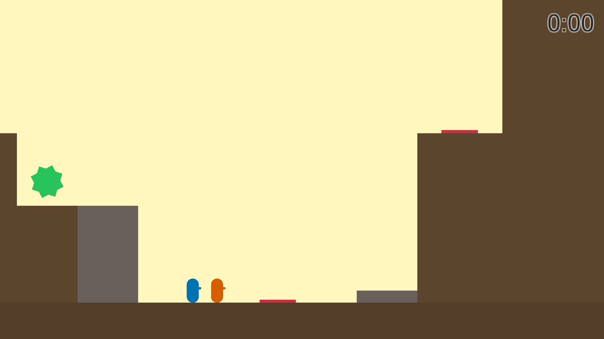
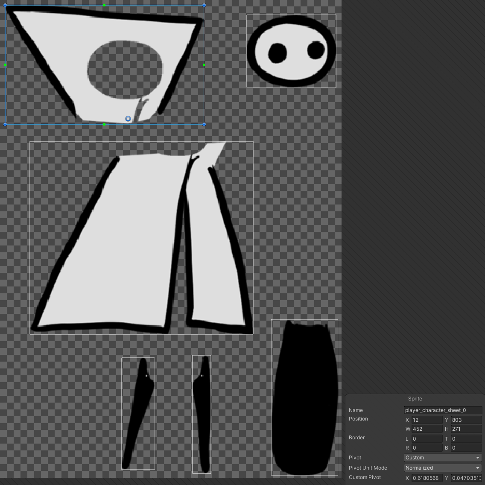

Projektin aloitus
Chronological (työnimi Aikapeli) on 2D-puzzle-platformer-peli. Aloitin pelin kehityksen
XAMK
junior hankkeessa, mutta sain harjoittelupaikan muualta. Halusin kuitenkin jatkaa
kehitystyötä
vapaa-ajalla projektitunteina.
Pelaajan tehtävänä on päästä esteradan loppuun ja kerätä vihreä tähti. Pelaaja tallentaa
useita suorituksia kentälle, jotka yhdessä ratkaisevat pulman. Vain yhden hahmon täytyy
päästä tähdelle asti. Kyseessä on ‘single player co-op’ -peli. Pelaaja tekee yhteistyötä
aikaisemman itsensä kanssa.
Uusinta - Ensimmäinen väliraportti
Toteutus tapahtuu Unity-pelimoottorin avulla. Tasoloikkapeliin tarvitaan ensimmäiseksi
kontrollit hahmolle, jotta kenttiä ja muita ominaisuuksia voi testata. Kopioin aluksi
jostakin projektista yksinkertaiset kontrollit, mutta projektin edetessä jouduin
kirjoittamaan ne käytännössä kokonaan uusiksi.
Seuraavaksi aloitin suoritusten nauhoituksen toteutuksen. Tutkin miten muissa unity
projekteissa on toteutettu replay toimintoja. Löysin kaksi erilaista toteutustapaa.
Snapshot toteutuksessa tallennetaan objektin ominaisuuksia ja ne toistetaan ruutu
ruudulta.
Esimerkiksi pelaajan liike voidaan toistaa uudestaan tallentamalla paikka ja siirtämällä
hahmo järjestyksessä tallennettuihin paikkoihin. Tämä tapa ei sovi minun
käyttötarkoitukseen, sillä peliin tulee todella paljon ominaisuuksia, joista pitäisi
pitää
kirjaa. Esimerkiksi animaatio tilojen (state) uudelleen toistaminen tällä tavalla olisi
todella monimutkaista.
Deterministisessä toteutuksessa vain pelaajan inputit tallennetaan. Luotetaan siis
siihen,
että tietyillä inputeilla moottorin simulaatio päätyy aina samoihin lopputuloksiin. Tämä
on
myös muistin kannalta paljon tehokkaampi ratkaisu. Tällä hetkellä 128 megaa riittää yli
sadan tunnin inputtien tallentamiseen. Mitä enemmän uniikkeja input-näppäimiä
tallennetaan,
sitä enemmän muistia käytetään. 256 megaa on Unityn asettama muistin käytön
ylärajasuositus
WebGL-projektille. Snapshot toteutuksella muisti olisi voinut olla esteenä.
Teknisesti deterministinen toteutus menee niin että Fixed updatessa pyörii funktio, joka
tallentaa Updatessa havaittavia inputteja ja tallentaa niitä structiin. Kun tallenne
halutaan toistaa, input struct listan perusteella voidaan antaa hahmolle fixed updatessa
sama input kuin tallentaessa.

Kyvyt ja tuntuma - Toinen väliraportti
Myöhemmissä tasoissa pelaajan hahmot saavat käyttöönsä erilaisia kykyjä. Ensimmäinen
kyky on
kääntää painovoima. Toteutus on yksinkertainen. Observer patternilla gravity managerissa
invoketaan noita evettejä ja gravity object komponentti kuuntelee. Näin vain halutut
rigidbodyt kääntävät painovoimansa. Peritty tracked object toimii samalla periaatteella.
Kun
resetointi event tapahtuu (esim. nauhoitus alkaa) esineiden transform palaa skenen
lähtöarvoihin.
Toinen kyky on pommi, joka hidastaa aikaa vaikutusalueella. Uusi pommi tuhoaa
aikaisemmat.
Esteissä on usein joku speed muuttuja, jota voidaan muuttaa on collision enter -funktion
avulla. Nopeus palautetaan on collision exit -funktiolla. Rigidbodyt saadaan hitaiksi
rigidBody.velocity arvoa muuttamalla. Arvoa ei suositella muuttamaan suoraan, koska
liike ei
ole tuolloin luonnollisen näköistä. Juuri tätä haluammekin, sillä ajan hidastaminen ei
ole
luonnonilmiö. En noudattanut varoitusta.
Tällä hetkellä pelissä ei ole mitään hienompaa meta edistymistä. Kentät seuraavat
toisiaan
vaikeusjärjestyksessä. Tulevaisuudessa aion toteuttaa näkymän kentän valintaan, jotta
pelaaja voi jumiin jäädessään kokeilla toista kenttää. Kentät monimutkaistuvat ja niihin
tulee lisää ominaisuuksia pelaajan edetessä.
Tässä vaiheessa halusin parantaa pelin tuntumaa. Katsoin Mark Brown kanavan videoita
tasoloikka suunnitteluun liittyen. Päätin sisällyttää coyote time ja jump buffer
mekaniikat
peliin.
Coyote time tarkoittaa, että pelaaja ei heti putoa reunan yli käveltyään vaan saa
sekunnin
murto-osan verran aikaa hypätä. Peli siis fuskaa pelaajan eduksi. Peli tuntuu selvästi
responsiivisemmalta näin, kömpelöt virheet eivät ole hauskoja, pelaaja epäonnistuu jos
ajoitus on todella pielessä tai lähestyy ongelmaa väärin.
Jump buffer tarkoittaa että pelaaja voi painaa hyppy näppäintä sekunnin murto-osan ennen
laskeutumista ja laskeuduttuaan pelaajahahmo hyppää. Perustelut mekaniikalle ovat samat
kuin
coyote timella. Molempia mekaniikkoja ohjataan ajastimien avulla. Inputit eivät enää
suoraan
ohjaa pelaajan hyppyä, vaan ne resetoivat ajastimia, joiden perusteella pelaaja hyppää.
Brownin mielestä hypyn korkeuden kontrollointi on tärkeä mekaniikka. Tämän
implementointi
oli nauhoitus mekaniikan kanssa oletettua vaikeampaa. Päädyin ratkaisuun, jossa
päästettyään
hyppynapista irti tai tietyn ajan jälkeen y-suuntaista nopeutta lasketaan. Tämä lisää
ylimääräisen boolean muuttujan input structiin, mutta muistin optimointi ei näyttäisi
olevan
ongelma. Myös aikapommin heitossa käytetään kahta muuttujaa. Vaihteleva hypyn korkeus
tekee
hyppelystä mielenkiintoisempaa ja haastavampaa. En ole vakuuttunut, että mekaniikka on
pulmapelin kehityksessä prioriteettilistalla korkealla.
Grafiikka ja ääni - Kolmas väliraportti

Alunperin suunnittelin hienompaa teemaa pelille, mutta en jaksa tuottaa monimutkaisia
assetteja. Pelaaja hahmot piirsin Krita-ohjelmassa. Otin inspiraatiota hahmojen
ulkonäköön
Journey ja Hollow Knight -peleistä. Hahmot on animoitu Unityn Animator ikkunassa. Eri
liikkuvat osat ovat omia objekteja, jotka ovat ruumis komponentin lapsia. Lapsi
komponentteja voi animoida vanhemmasta erikseen. Tämä ‘2D rig’-metodi on ajankäytön
kannalta
paljon tehokkaampaa, kuin perinteinen käsin piirretty animaatio. Pelaajan collider on
yksinkertainen kapseli, jotta se ei jää kentän muotoihin jumiin.
Blackthronprod-käyttäjällä
on hyviä opetusvideoita 2D-pelitaiteeseen liittyen YouTubessa.
Neliskanttiset rakennelmat on toteutettu yksinkertaisella sprite mapilla. Kaarevat
kummut
ovat sprite shape -objekteja. Tämän lisäksi skenessä on paljon partikkeli efektejä,
kuten
sumu ja tähdet, jotka tekevät siitä paljon mielenkiintoisemman vähällä vaivalla. Myös
2D-valoilla luodaan tunnelmaa. Valot vaativat Unityn ‘uuden’ Universal Render Pipelinen
(URP) käytön projektissa.
Tein ääniä bfxr-ohjelmalla. Voiton töräys on cc0 ääni netistä ja musiikit on ladattu
Unity
Asset Storesta. Kaikki äänet kuuluvat samasta sound manager objektista. Samoin lähes
kaikki
partikkelit toistetaan yhdestä particle managerista.
Asetuksia äänille pitäisi toteuttaa myös. Desibelit eivät ole lineaarinen asteikko.
Maalaisjärjellä tehty slider muuttaa äänenvoimakkuutta tämän takia logaritmisesti.
Äänenvoimakkuuden säätöön olisi hyvä katsoa joku tutoriaali. Asetusten toteutuksen
yhteydessä tulisi myös tallentaminen kerrattua, jonka pohjalta voisi työstää myös
edistyksen
tallentamista.
Seuraavaksi teen lisää tasoja. Tavoitteena on noin 30-40 kenttää, joista 11 on täysin
valmiita. Olen suunnitellut ja testannut noin 10 kenttää valmiiden lisäksi, mutta ne
täytyy
rakentaa uudestaan uusilla asseteilla.
Kenttien lisäksi tarvitaan kentän valitsemiseen tarkoitettu ruutu. Myös pelaajan
vaakasuuntainen liike on ohjelmoitava uudestaan, jotta se toimii paremmin kaltevilla
tasoilla.
Kentät - Neljäs väliraportti
Olen käyttänyt suurimman osan ajasta tämän vuoden puolella uusien kenttien tekemiseen.
Aloitan kentän suunnittelun yleensä MS Paintilla. Yksinkertaiset laatikot riittävät
kentän
pohjan suunnitteluun. Kenttää suunniteltaessa mietin mitkä reitit kentän läpi ovat
sallittuja, eli mikä idea pelaajan on keksittävä kentän läpäisyä varten. Yhtä ideaa
varioimalla saa tehtyä usein monta kenttää jotka vaikeutuvat luonnollisesti.
Olen maalannut jokaiseen pelin maailmaan uniikin taustan Krita:lla. Ne jäävät tason,
partikkeli- ja post processing efektien taakse piiloon, joten kehnosta digitaiteen
osaamisestani ei ole koitunut estettä. Muutenkin olen nojannut suttuiseen tyyliin
taustoja
maalatessa, jotta ne eivät vie huomiota pelillisesti tärkeistä asioista. Kaikki maailmat
käyttävät sprite mappeihin ja splineihin samoja assetteja. Olen kuitenkin pyrkinyt
tekemään
jokaisesta maailmasta uniikin värejä ja tason muotoja vaihtelemalla. Tällä hetkellä
pelissä
on kolme eri maailmaa. Hyviä, valmiita kenttiä on 20, noin puolet tavoitteesta.
Testaus - Viides väliraportti
Uusia ominaisuuksia on uusiin kenttiin keskittymisen vuoksi tullut vähän. Joulukuun Demo
Day:ta varten rakensin kuitenkin yksinkertaisen pause-, ja main menun. Pause menussa
peli
pysähtyy. Efekti on toteutettu asettamalla timescale nollaan, kun menu avataan.
Tein myös yksinkertaisen tason valintaan tarkoitetun valikon. Ruudulla on lueteltuna
kaikki
tiettyyn maailmaan kuuluvat tasot. Tasot ja uudet maailmat avautuvat tasoja
suorittamalla.
Seuraavaksi kirjaus suoritetuista tasoista pitäisi päivittää johonkin asiakirjaan, jotta
pelaajan tekemä edistys ei katoa pelin sammuessa.
Demo day oli palautteen kannalta hyödyllinen tapahtuma. Sain hyvää dataa pelin
vaikeustasosta. Kenttää jonka olin itsekin luokitellut ‘kompa’ -kentäksi ei läpäissyt
lähes
kukaan ilman vinkkejä. Olen siirtänyt kyseisen kentän maailman loppupäähän ja lisännyt
sitä
ennen helpomman kentän, joka avaa konseptia ensikertalaiselle. Pelaaja voi halutessaan
hypätä sinne suoraan, mutta tuolloin vaikeustasopiikki ei ole kehittäjän ongelma. Tämän
lisäksi olen lisännyt pari huumori kentää pelin alkuun, joissa pelaajan on vain
liiskattava
toinen hahmoistaan päästäkseen maaliin. Pelaajalla pitäisi olla nyt enemmän aikaa
tutustua
pelin vaatimaan ajatuksen juoksuun, ennen kuin se alkaa oikeasti haastamaan pelaajaa.
Testautin peliä uudestaan alakoululaisilla. Iso osa testaajista ei ollut pelannut
tietokoneella lainkaan. Testin perusteella lisäsin todella helppoja tasoja pelin alkuun.
Hyppimistä vaativat tasot siirrettiin myöhemmäksi. Tein myös raoista selkeästi liian
suuria
hypättäväksi, jos niiden yli ei ole tarkoitusta pystyä hyppäämään. Mielestäni ei ole
hyvä,
että pelaaja joutuu testaamaan reittejä niiden miettimisen sijaan.
Pelautin peliä myös kaveriporukalla. Pelurit oppivat pelaamaan nopeasti. Nopein pelaaja
pelasi sisällön läpi noin neljässäkymmenessä minuutissa. Sisältöä tarvisi siis ainakin kaksin
tai kolmin kertaisen määrän, jos pelin aikoo Steamiin julkaista.
Osallistuin toukokuussa Bit1 opiskelijapelikilpailuun. Kaakkois-Suomen
ennakkokarsinnassa
olin ainoa osallistuja, pääsin jatkoon. Palautteen perusteella lisäsin peliin
käsinpiirrettyjä taustoja sekä kasvillisuutta, jonka kanssa pelaaja voi hieman
vuorovaikuttaa. Pelin visuaalinen ilme parani. Helsingissä järjestetyssä finaalissa
tuomaristo ei pitänyt pelistä. Pelin huonoselkoiset ohjeet eivät uponneet heihin. Viiden
minuutin testaussessio oli aivan liian lyhyt pelin mekaniikan sisäistämiseen. Peli
kaipaisi
parannusta ohjeisiin tai ihan oikeaa tutoriaalia.
Iso burnout tähän projektiin. Täytyy ottaa taukoa ja miettiä jatkoa.